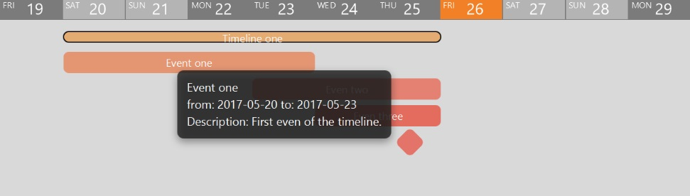

When selecting start and end dates for the event, only the dates inside the duration of the timeline will available for choosing.
A new has been now created and added to the current timeline. When hovering over the event with the mouse pointer a tooltip will display the details of the event.
All events will be displayed in a color variation of the timeline they belong to. Events that have a duration will be displayed as a rectangular bar, whereas events that only last a day will have a diamond shape.